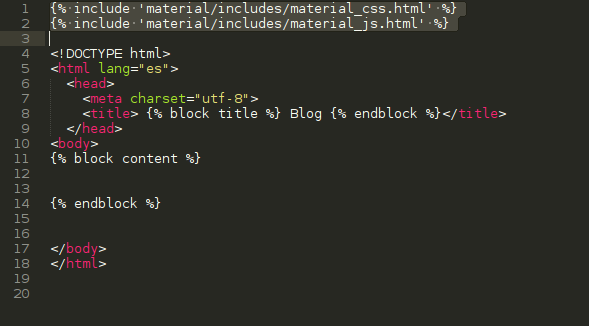
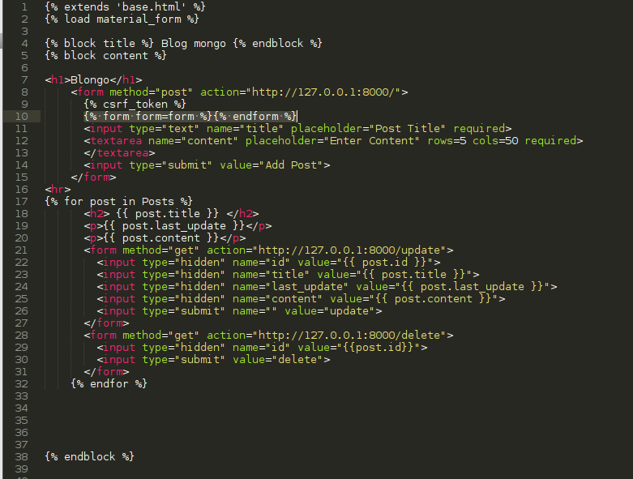
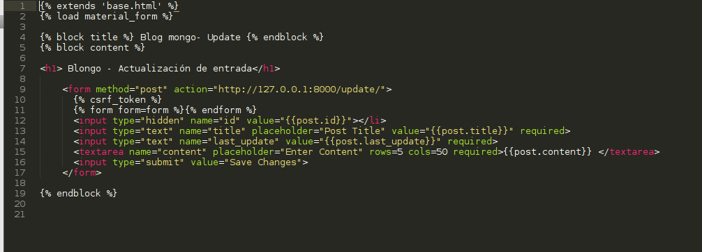
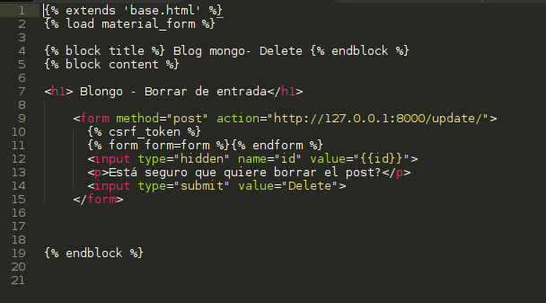
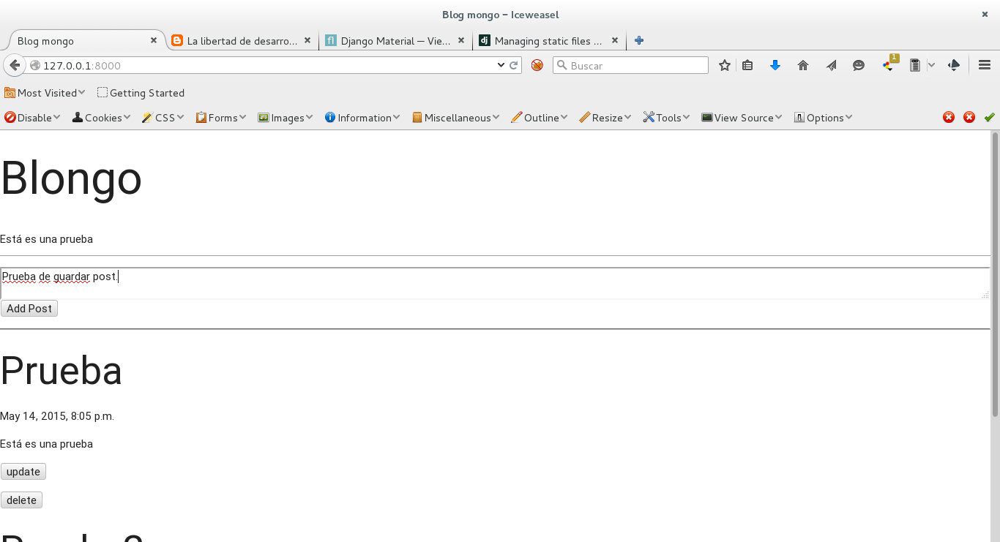

Usar mongodb en Django
Posted on jue 14 mayo 2015 in Tutorial Python • 5 min read
En artículos anteriores se ha tocado el tema de mongodb y el tema de Django.
En este caso se tocará el tema de crear un blog con Django usando mongodb, este artículo se basa en un artículo en Inglés del sitio Developers Work de IBM .
En este caso se tendrá un formulario para crear post, actualizarlos y borrarlos. Se usará la plantilla de material design para Django explicado en el artículo anterior.
Para poder desarrollar la aplicación en Django y con mongodb se tiene que instalar Django, mongodb y mongoengine a continuación se muestra la instalación a lo Debian:
apt-get install python-mongoengine mongodb-server mongodb-clients mongodb python3-pymongo python3-pymongo-ext python-django python3-django
Lo primero que se tiene que hacer es crear el proyecto blog.
django-admin startproject blog
Esto crea directorios y archivos como se muestra a continuación:
blog
├── blog
│ ├── __init__.py
│ ├── settings.py
│ ├── urls.py
│ └── wsgi.py
└── manage.py
Ahora se crea la aplicación posts:
django-admin startapp posts
Ahora se tiene la siguiente estructura de directorios y archivos:
blog
├── blog
│ ├── __init__.py
│ ├── __init__.pyc
│ ├── settings.py
│ ├── settings.pyc
│ ├── urls.py
│ └── wsgi.py
├── manage.py
└── posts
├── admin.py
├── __init__.py
├── migrations
│ └── __init__.py
├── models.py
├── tests.py
└── views.py
Modificar el archivo blog/blog/settings.py para que refleje el uso de mongodb y la aplicación.
Es necesario agregar en las primeras líneas del settings.py el nombre de la base de datos para mongodb:
DBNAME = 'blongo'
Agregar en las aplicaciones posts y el soporte a material-design que se explico en artículo anterior.
INSTALLED_APPS = (
'material',
'material.admin',
'django.contrib.admin',
'django.contrib.auth',
'django.contrib.contenttypes',
'django.contrib.sessions',
'django.contrib.messages',
'django.contrib.staticfiles',
'posts',
)
Se modifica también el settings.py para que procese el directorio donde estarán las plantillas:
TEMPLATES = [
{
'BACKEND': 'django.template.backends.django.DjangoTemplates',
'DIRS': [os.path.join(BASE_DIR, 'templates' )],
'APP_DIRS': True,
'OPTIONS': {
'context_processors': [
'django.template.context_processors.debug',
'django.template.context_processors.request',
'django.contrib.auth.context_processors.auth',
'django.contrib.messages.context_processors.messages',
],
},
},
]
Se crean los directorios templates y media:
mkdir -p {templates,static}
Y en media se crean los directorios css, images y js:
mkdir -p static/{css,images,js}
Ahora la estructura de directorios queda de la siguiente manera:
blog
├── blog
│ ├── __init__.py
│ ├── __init__.pyc
│ ├── settings.py
│ ├── settings.pyc
│ ├── urls.py
│ └── wsgi.py
├── manage.py
├── posts
│ ├── admin.py
│ ├── __init__.py
│ ├── migrations
│ │ └── __init__.py
│ ├── models.py
│ ├── tests.py
│ └── views.py
├── static
│ ├── css
│ ├── images
│ └── js
└── templates
En el directorio posts se modifica el archivo models.py con el siguiente contenido:
#Se importa models
from django.db import models
#Se importa mongoengine quien es el que facilita la conexión a mongodb
from mongoengine import *
#Se trae el nombre de la base de datos de mongodb de settings.py
from blog.settings import DBNAME
#Se conecta a la base de datos
connect(DBNAME)
#Se crea la tabla Posts (documento), con title, content y la fecha de publicación y/o actualización
class Post(Document):
title = StringField(max_length=120, required=True)
content = StringField(max_length=500, required=True)
last_update = DateTimeField(required=True)
Se modifica el archivo blog/posts/views.py con el siguiente contenido (ahí se publica el formulario, la lista de posts, se actualiza cada post y se puede borrar cada post):
from django.shortcuts import render, render_to_response
from django.template import RequestContext
from models import Post
import datetime
#Se define index donde recibe como argumento request
def index(request):
#SI el metodo es un post, se toma los datos del formulario y se guarda en
#mongodb
if request.method == 'POST':
# nuevo post
title = request.POST['title']
content = request.POST['content']
post = Post(title=title)
post.last_update = datetime.datetime.now()
post.content = content
post.save()
#Si el metodo es get entonces se está cargando la página inicialmente, así que se publican
#los posts
# se obtiene todos los posts de la base de datos
posts = Post.objects
return render_to_response('index.html', {'Posts': posts},context_instance=RequestContext(request))
#Actualizar un post
def update(request):
#Captura el id del post
id = eval("request." + request.method + "['id']")
post = Post.objects(id=id)[0]
#Si el metodo es post, se está actualizando la información del formulario
if request.method == 'POST':
# se actualiza los valores y se salva en mongodb
post.title = request.POST['title']
post.last_update = datetime.datetime.now()
post.content = request.POST['content']
post.save()
template = 'index.html'
params = {'Posts': Post.objects}
#Si el metodo es GET se muestra la página incial update.html
elif request.method == 'GET':
template = 'update.html'
params = {'post':post}
return render_to_response(template, params, context_instance=RequestContext(request))
#Para borrar un posts
def delete(request):
#Se toma el id del post
id = eval("request." + request.method + "['id']")
#Se pregunta si es POST, se le pasa el id del posts y se borra, se va a la página index.html
if request.method == 'POST':
post = Post.objects(id=id)[0]
post.delete()
template = 'index.html'
params = {'Posts': Post.objects}
#Si es un metodo get entonces se muestra la página delete.html
elif request.method == 'GET':
template = 'delete.html'
params = { 'id': id }
return render_to_response(template, params, context_instance=RequestContext(request))
Ahora se mostrarán las imágenes de los archivos base.html, index.html, update.html y delete.html.
En el archivo base.html se agregarán las siguientes dos líneas las cuales permiten que se use el estilo y javascript a lo material design:
{% include 'material/includes/material_css.html' %}
{% include 'material/includes/material_js.html' %}

Los archivos index.html, update.html y delete.html tendrán 2 líneas, en una heredan el contenido del archivo base.html y en la otra línea se carga material_form (material design):
{% extends 'base.html' %}
{% load material_form %}
En el caso que se tenga un formulario se debe colocar después del token csrf la siguiente línea:
{% form form=form %}{% endform %}
Ya con eso se manejan los formularios con el estilo material design.
A continuación se muestra la imagen del archivo index.html:

A continuación se muestra la imagen del archivo update.html:

A continuación se muestra la imagen del archivo delete.html:

Para que esto funcione falta modificar el archivo blog/blog/urls.py con los urls del index, update y delete:
from django.conf.urls import include, url
from django.contrib import admin
urlpatterns = [
url(r'^admin/', include(admin.site.urls)),
url(r'^$', 'posts.views.index'),
url(r'^update/', 'posts.views.update'),
url(r'^delete/', 'posts.views.delete'),
]
Se crea la base de datos administrativa con el comando migrate:
./manage.py migrate
Operations to perform:
Synchronize unmigrated apps: staticfiles, posts, material, messages, material_admin
Apply all migrations: admin, contenttypes, auth, sessions
Synchronizing apps without migrations:
Creating tables...
Running deferred SQL...
Installing custom SQL...
Running migrations:
Rendering model states... DONE
Applying contenttypes.0001_initial... OK
Applying auth.0001_initial... OK
Applying admin.0001_initial... OK
Applying contenttypes.0002_remove_content_type_name... OK
Applying auth.0002_alter_permission_name_max_length... OK
Applying auth.0003_alter_user_email_max_length... OK
Applying auth.0004_alter_user_username_opts... OK
Applying auth.0005_alter_user_last_login_null... OK
Applying auth.0006_require_contenttypes_0002... OK
Applying sessions.0001_initial... OK
Se crea la cuenta administrativa:
./manage.py createsuperuser
Username (leave blank to use 'ecrespo'): ernesto
Email address: ecrespo@xxxx.xxx
Password:
Password (again):
Superuser created successfully.
Se ejecuta el servidor de django:
./manage.py runserver
Performing system checks...
System check identified no issues (0 silenced).
May 14, 2015 - 20:52:27
Django version 1.8, using settings 'blog.settings'
Starting development server at http://127.0.0.1:8000/
Quit the server with CONTROL-C.
A continuación se muestra una imagen de la aplicación mientras se llena el formulario:
Por último se muestra el post que se acaba de publicar:

Para más información pueden revisar los siguientes enlaces:
- http://api.mongodb.org/python/1.6/tools.html
- http://www.peterbe.com/plog/using-mongodb-in-your-django-app/django-mongodb-html5-slides/html5.html#slide1
- http://staltz.com/djangoconfi-mongoengine/#/
- https://django-mongodb-engine.readthedocs.org/en/latest/tutorial.html
- https://github.com/vpulim/mango
- https://www.safaribooksonline.com/library/view/mongodb-and-python/9781449312817/ch04s03.html
¡Haz tu donativo! Si te gustó el artículo puedes realizar un donativo con Bitcoin (BTC) usando la billetera digital de tu preferencia a la siguiente dirección: 17MtNybhdkA9GV3UNS6BTwPcuhjXoPrSzV
O Escaneando el código QR desde la billetera: